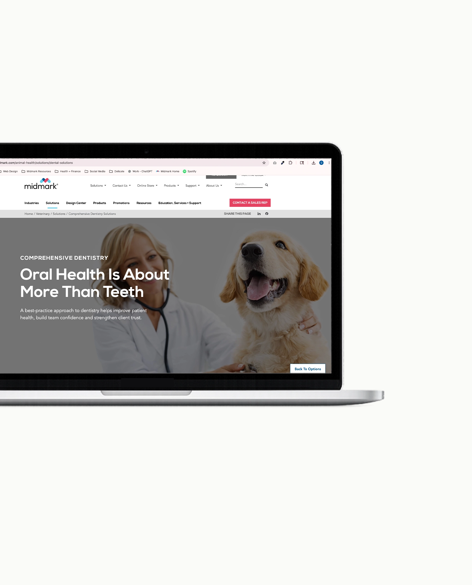

01
Comprehensive Dentistry
A refresh of Midmark’s Veterinary comprehensive dentistry landing page, focused on creating a clearer and more guided experience for veterinary audiences. The redesign improved the page structure with quick-link navigation, repositioned key video content, and refined CTA pathways to better support user journeys.
Problem
Lacked a clear narrative and structure — making it harder for veterinary audiences to understand the value and take action.
My Role
UI design and content restructure - improving hierarchy, navigation, content flow, and CTA paths across key user journeys.
Process
ideation → content bucketing → wireframe → design system → build → staged review → launch.
Result
A landing page that guides the audiences through Midmark’s comprehensive dentistry approach and moves users to action.
Tools used
Figma
HTML
CSS
Workfront
See the project